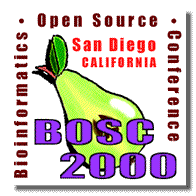

|  |
E-CELL: Simulation Environment for while cell simulationKouichi Takahashi |
| Keio Univ. Lab. for Bioinformatics shafi@e-cell.org We are developing E-CELL Simulation Environment with the aim of providing fundamental software platform for non-trivial, multi-scale modeling and simulation of cell systems. E-CELL attempts to provide a framework not only for analyzing metabolism and cell signaling, but also for higher-order cellular phenomena such as gene regulation networks, DNA replication, and other occurrences in the cell cycle. The current version at this point in time of writing this is 1.0beta. Based on 1.0 series, we are developing a new version, 2.x series, for increased portability and robustness. After extensive redesign of simulation engine and simulator architecture, version 3.x will be developed. The core portion of the simulation environment, E-CELL Core System (ECS) is a object oriented software written in C++. Other software modules are written in python, C++ and perl. Python language interpreter will be integrated with ECS in version 3.x. We plan to eventually make them free "open source" software. We are now calling for developers and collaborators. |
|